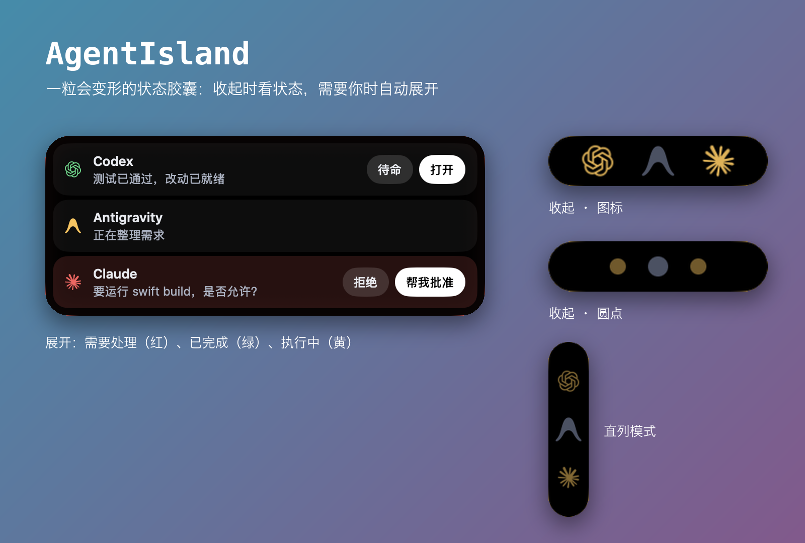
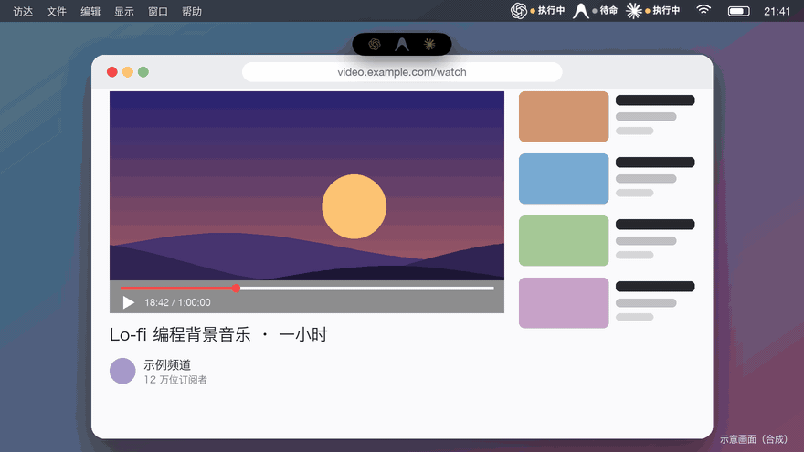
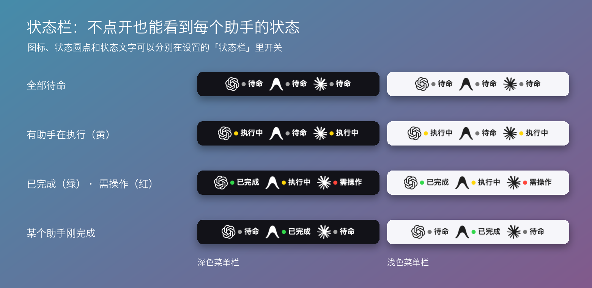

收起时只是状态灯
每个会话一个点，同一助手开两个会话就是两个点，各有各的颜色。执行中的缓缓呼吸，已完成的不会被另一个执行中的盖住。
AgentIsland 是 macOS 上的灵动岛式状态悬浮窗。收起时只是几颗状态灯，助手需要你、或者做完了，它自己展开，你不用再一个个窗口去翻。
Apple Silicon · 临时签名、未公证（首次打开需手动允许）· 界面为中文 · MIT 开源
示意动画，助手名称与内容均为虚构的演示数据。
同时开着几个 AI 助手、几个会话，最麻烦的是不知道谁在等你。AgentIsland 只回答一个问题：现在有没有东西需要我看。
每个会话一个点，同一助手开两个会话就是两个点，各有各的颜色。执行中的缓缓呼吸，已完成的不会被另一个执行中的盖住。
有会话在等你（红）或做完了还没看（绿），胶囊展开成行列表。点胶囊可手动收起，收起过的那几项不会再弹出，直到有新的。
Codex 的文本回复和一次性审批、Antigravity 的后台回复，可以不切窗口直接做。无法确认目标会话时，只给「打开」，不乱发。
完成的提示一直保留到你看过那个对话。多个对话窗口各记各的，看了第一个，第二个的提示还在。
每个助手一格：图标、状态点、状态文字。胶囊收起或隐藏时，看菜单栏就知道谁在忙、谁做完了。三项都可单独关闭。
读本机的会话日志和可选 Hook 事件来判断状态；没有分析数据上传，Hook 只保存白名单字段，不存提示词和命令正文。
展开成行列表，或收起成图标、圆点，也可以竖着排。边缘有一圈细光：红色呼吸，黄色、绿色常亮，全部待命时是淡白。



这是预发布版。下面是已经验证过的，以及还没验证的。
| 助手 | 能力 | 限制 |
|---|---|---|
| Codex Desktop | 状态、问题、文本回复、一次性审批 | 依赖非公开的本机通信，桌面端版本变化后需要重新验证。只保留最新回合里未回答的问题。 |
| Antigravity | 状态、问题展示、后台回复 | 依赖未公开接口，仅限桌面版 2.27.0、2.28.0、2.28.2、2.29.0。文字回复没有独立样本，更多环境仍待验证。 |
| Claude Code 实验性 | 状态、问题（含真实文字与选项）；装了可选 Hook 后可靠显示等待授权，并可在岛上回答单选问题 | 从会话记录读取状态，没有 Hook 时判断不了是否在等待授权。多个问题、可多选和命令授权，仍回 Claude 里处理。 |
| Cursor · Windsurf · Trae 实验性 | 状态监控 | 各助手能力不同，未完成独立验收。 |
需要 macOS 14 或更新版本，目前只提供 Apple Silicon（arm64）安装包。
.sha256 放在同一目录，运行 shasum -a 256 -c 核对，显示 OK 再继续。AgentIsland.previous.日期.app，确认新版正常再删。为了判断状态，AgentIsland 在本机读取已启用助手的日志、Hook 事件和部分辅助功能界面，会在悬浮窗里显示问题和命令。会话内容只在内存里解析，不写入日志、不上传；目前没有任何分析数据上传服务。屏幕共享时悬浮窗也可能被看到，请留意。完整说明见 隐私说明。